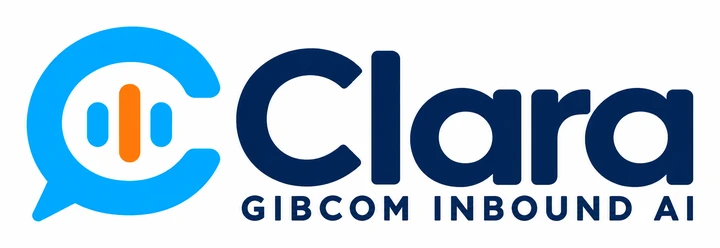

AI and automation · 2026
Clara, the Gibcom inbound line
An AI voice assistant, in development, designed to answer enquiries, qualify them and book callbacks.
- Status
- In development, part of the private AIBOS Command Centre
- My role
- Conversation design, call flow and the plan for integrating it with the enquiry process
Overview
Clara is being built to answer Gibcom's inbound line: greet callers, work out what they need, capture the details and book a callback, so a small team never misses an enquiry while on client work. She is still in development as part of the AIBOS Command Centre, which runs privately on my own computer, so she is not taking calls yet.
The problem
Enquiries arrived while the team was with clients. Voicemail went unanswered for hours and some callers never left a message.
Approach
- Wrote the conversation as a script first, then built the flow around it.
- Kept Clara to qualifying and booking; anything complex is handed to a person.
- Planned so the captured details feed the existing enquiry process rather than a new inbox.
- Built inside the AIBOS Command Centre, so it follows the same governance rules as the rest of the system.
Tools
Outcomes and next measurement
Clara is not live yet, so there is nothing to measure. Once she answers the Gibcom phone line, the first measures will be calls answered, enquiries captured and callbacks booked, compared with the voicemail period before.
What I learned
A voice assistant is a script before it is a system. Getting the words right for a nervous caller mattered more than any setting.